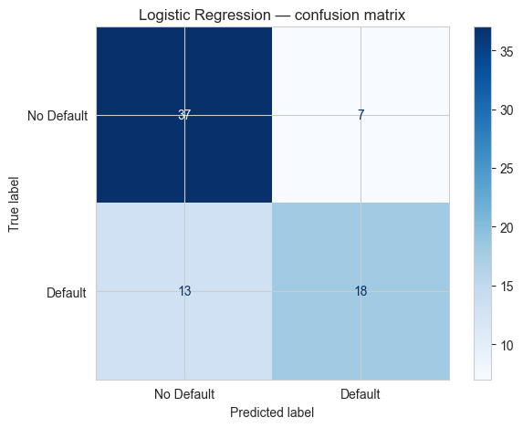
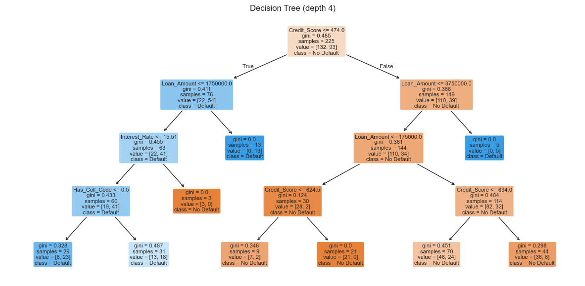
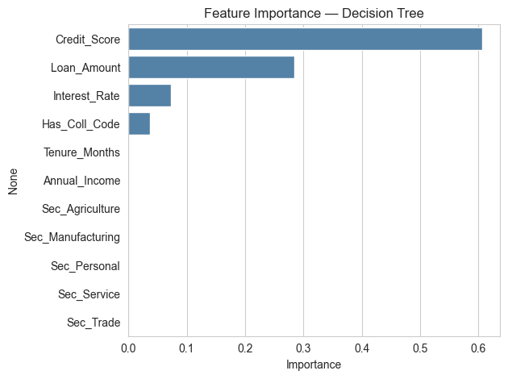

Notebook 7 — Classification for CA Professionals
Goal: Predict a category — for example "will this loan default — Yes or No?"
You will learn:
- What classification is and how it differs from regression
- Preparing the data (X / y, encoding, train/test split)
- Logistic Regression — a simple, interpretable classifier
- Decision Tree — a model your manager can read
- Measuring quality: Accuracy, Confusion Matrix, Precision/Recall
- Which features matter most
- A short mini-project on loan default
The dataset is
data/loans.csv— 300 loans with a knownDefaulted(1/0) flag.
1. Classification vs Regression
| Question | Type |
|---|---|
| "What will next month's revenue be?" | Regression (number) |
| "Will this client default? Yes / No" | Classification (category) |
| "Is this transaction fraudulent?" | Classification |
| "Which risk bucket does the customer fall in: Low/Med/High?" | Classification (3 classes) |
The data preparation steps are the same. Only the model and the evaluation metrics change.
import pandas as pd
import numpy as np
import matplotlib.pyplot as plt
import seaborn as sns
sns.set_style("whitegrid")
loans = pd.read_csv("data/loans.csv")
print("Shape :", loans.shape)
print("Default rate :", f"{loans['Defaulted'].mean()*100:.1f}%")
loans.head()
Shape : (300, 10)
Default rate : 41.3%
| Loan_ID | Customer | Loan_Amount | Tenure_Months | Interest_Rate | Annual_Income | Credit_Score | Has_Collateral | Sector | Defaulted | |
|---|---|---|---|---|---|---|---|---|---|---|
| 0 | L2000 | Cust_000 | 100000 | 36 | 13.78 | 180000 | 300 | No | Trade | 1 |
| 1 | L2001 | Cust_001 | 500000 | 12 | 11.59 | 360000 | 451 | Yes | Service | 1 |
| 2 | L2002 | Cust_002 | 1000000 | 12 | 13.08 | 180000 | 521 | Yes | Service | 0 |
| 3 | L2003 | Cust_003 | 100000 | 60 | 9.83 | 180000 | 403 | Yes | Trade | 0 |
| 4 | L2004 | Cust_004 | 100000 | 120 | 8.17 | 180000 | 750 | Yes | Personal | 0 |
2. Preparing the data
Two preparation steps:
- Encode any text column into numbers (so the model can read it).
- Split into a feature matrix
Xand a target vectory.
# Encode text columns
loans["Has_Coll_Code"] = loans["Has_Collateral"].map({"Yes": 1, "No": 0})
# One-hot encode the Sector column
sector_dummies = pd.get_dummies(loans["Sector"], prefix="Sec").astype(int)
data = pd.concat([loans, sector_dummies], axis=1)
# Pick the features we will use
feature_cols = [
"Loan_Amount", "Tenure_Months", "Interest_Rate",
"Annual_Income", "Credit_Score", "Has_Coll_Code",
] + list(sector_dummies.columns)
X = data[feature_cols]
y = data["Defaulted"]
X.head()
| Loan_Amount | Tenure_Months | Interest_Rate | Annual_Income | Credit_Score | Has_Coll_Code | Sec_Agriculture | Sec_Manufacturing | Sec_Personal | Sec_Service | Sec_Trade | |
|---|---|---|---|---|---|---|---|---|---|---|---|
| 0 | 100000 | 36 | 13.78 | 180000 | 300 | 0 | 0 | 0 | 0 | 0 | 1 |
| 1 | 500000 | 12 | 11.59 | 360000 | 451 | 1 | 0 | 0 | 0 | 1 | 0 |
| 2 | 1000000 | 12 | 13.08 | 180000 | 521 | 1 | 0 | 0 | 0 | 1 | 0 |
| 3 | 100000 | 60 | 9.83 | 180000 | 403 | 1 | 0 | 0 | 0 | 0 | 1 |
| 4 | 100000 | 120 | 8.17 | 180000 | 750 | 1 | 0 | 0 | 1 | 0 | 0 |
from sklearn.model_selection import train_test_split
X_tr, X_te, y_tr, y_te = train_test_split(
X, y, test_size=0.25, random_state=42, stratify=y
)
print("Train:", len(X_tr), " Test:", len(X_te))
print("Default rate (train):", f"{y_tr.mean()*100:.1f}%")
print("Default rate (test) :", f"{y_te.mean()*100:.1f}%")
Train: 225 Test: 75
Default rate (train): 41.3%
Default rate (test) : 41.3%
3. Logistic Regression — the simplest classifier
Despite the name "regression", logistic regression is a classification model. It outputs a probability between 0 and 1 — anything above 0.5 means "predict default".
from sklearn.linear_model import LogisticRegression
from sklearn.preprocessing import StandardScaler
# Scaling helps logistic regression converge cleanly
scaler = StandardScaler()
X_tr_s = scaler.fit_transform(X_tr)
X_te_s = scaler.transform(X_te)
logit = LogisticRegression(max_iter=1000)
logit.fit(X_tr_s, y_tr)
print("Training accuracy :", round(logit.score(X_tr_s, y_tr), 3))
print("Test accuracy :", round(logit.score(X_te_s, y_te), 3))
Training accuracy : 0.778
Test accuracy : 0.733
4. Confusion Matrix — where the model is right and wrong
The confusion matrix is the heart of classification evaluation:
Predicted: No Predicted: Yes
Actual: No → TN (good) FP (false alarm)
Actual: Yes → FN (missed!) TP (caught)
| Metric | Formula | Meaning |
|---|---|---|
| Accuracy | (TP+TN)/all | overall % correct |
| Precision | TP / (TP+FP) | "of those predicted default, % correct" |
| Recall | TP / (TP+FN) | "of actual defaults, % caught" |
For loan default the most expensive mistake is FN — missing a real defaulter. So we care most about Recall.
from sklearn.metrics import confusion_matrix, classification_report, ConfusionMatrixDisplay
y_pred = logit.predict(X_te_s)
cm = confusion_matrix(y_te, y_pred)
print("Confusion matrix:")
print(cm)
print()
print(classification_report(y_te, y_pred, target_names=["No Default","Default"]))
Confusion matrix:
[[37 7]
[13 18]]
precision recall f1-score support
No Default 0.74 0.84 0.79 44
Default 0.72 0.58 0.64 31
accuracy 0.73 75
macro avg 0.73 0.71 0.72 75
weighted avg 0.73 0.73 0.73 75
ConfusionMatrixDisplay(cm, display_labels=["No Default","Default"]).plot(cmap="Blues")
plt.title("Logistic Regression — confusion matrix")
plt.tight_layout()
plt.show()

Practice 1
Compute the accuracy by hand from the confusion matrix above:
accuracy = (TN + TP) / total
Print the result and check it matches accuracy_score(y_te, y_pred).
# Your turn:
Show solution
from sklearn.metrics import accuracy_score
tn, fp, fn, tp = cm.ravel()
print(f"By hand : {(tn+tp)/(tn+fp+fn+tp):.3f}")
print(f"Sklearn : {accuracy_score(y_te, y_pred):.3f}")
5. Decision Tree — a model you can read
A Decision Tree builds a flowchart of yes/no questions. Easy to explain to non-technical clients.
from sklearn.tree import DecisionTreeClassifier, plot_tree
tree = DecisionTreeClassifier(max_depth=4, random_state=0)
tree.fit(X_tr, y_tr) # trees don't need scaling
print("Train accuracy:", round(tree.score(X_tr, y_tr), 3))
print("Test accuracy:", round(tree.score(X_te, y_te), 3))
Train accuracy: 0.764
Test accuracy: 0.747
plt.figure(figsize=(15, 7))
plot_tree(tree,
feature_names=X.columns,
class_names=["No Default","Default"],
filled=True, rounded=True, fontsize=8)
plt.title("Decision Tree (depth 4)")
plt.show()

Practice 2
Build another Decision Tree with max_depth=2 (a very shallow tree). Print its train and test accuracy. Is it better or worse than the depth-4 tree?
# Your turn:
Show solution
t2 = DecisionTreeClassifier(max_depth=2, random_state=0).fit(X_tr, y_tr)
print("depth=2 train:", round(t2.score(X_tr, y_tr), 3))
print("depth=2 test :", round(t2.score(X_te, y_te), 3))
6. Which features matter most?
A Decision Tree (and other tree models) can tell us which inputs were most useful.
imp = pd.Series(tree.feature_importances_, index=X.columns)
imp = imp.sort_values(ascending=False)
sns.barplot(x=imp.values, y=imp.index, color="steelblue")
plt.title("Feature Importance — Decision Tree")
plt.xlabel("Importance")
plt.tight_layout()
plt.show()
imp.round(3)

Credit_Score 0.607
Loan_Amount 0.284
Interest_Rate 0.073
Has_Coll_Code 0.037
Tenure_Months 0.000
Annual_Income 0.000
Sec_Agriculture 0.000
Sec_Manufacturing 0.000
Sec_Personal 0.000
Sec_Service 0.000
Sec_Trade 0.000
dtype: float64
7. Predicting for a new loan application
Given a brand-new application, the model tells us the probability of default.
new_loan = pd.DataFrame({
"Loan_Amount": [1500000],
"Tenure_Months": [36],
"Interest_Rate": [12.5],
"Annual_Income": [600000],
"Credit_Score": [610],
"Has_Coll_Code": [0], # no collateral
"Sec_Agriculture":[0], "Sec_Manufacturing":[0],
"Sec_Personal":[1], "Sec_Service":[0], "Sec_Trade":[0],
})
# Make sure the columns match X exactly
new_loan = new_loan[X.columns]
prob = tree.predict_proba(new_loan)[0, 1]
print(f"Default probability : {prob*100:.1f}%")
print("Decision :", "REJECT / High risk" if prob > 0.5 else "Approve")
Default probability : 34.3%
Decision : Approve
8. Mini-Project — Build your own default-risk classifier
Steps:
- Re-load
data/loans.csv. - Encode
Has_Collateraland one-hot encodeSector. - Build
Xandy(target =Defaulted). - Split 70 / 30 with
random_state=1. - Train both a
LogisticRegression(with scaling) and aDecisionTreeClassifier(max_depth=5). - Print test accuracy and the classification report for each.
- Plot the confusion matrix for the better model.
- Write a one-line conclusion: which model would you pick and why?
# Your code here
Show solution
df = pd.read_csv("data/loans.csv")
df["Has_Coll_Code"] = df["Has_Collateral"].map({"Yes":1,"No":0})
dum = pd.get_dummies(df["Sector"], prefix="Sec").astype(int)
df = pd.concat([df, dum], axis=1)
feat = ["Loan_Amount","Tenure_Months","Interest_Rate","Annual_Income",
"Credit_Score","Has_Coll_Code"] + list(dum.columns)
X, y = df[feat], df["Defaulted"]
from sklearn.model_selection import train_test_split
from sklearn.preprocessing import StandardScaler
from sklearn.linear_model import LogisticRegression
from sklearn.tree import DecisionTreeClassifier
from sklearn.metrics import classification_report, confusion_matrix, ConfusionMatrixDisplay
X_tr, X_te, y_tr, y_te = train_test_split(X, y, test_size=0.3, random_state=1, stratify=y)
sc = StandardScaler()
X_tr_s = sc.fit_transform(X_tr); X_te_s = sc.transform(X_te)
lr = LogisticRegression(max_iter=1000).fit(X_tr_s, y_tr)
dt = DecisionTreeClassifier(max_depth=5, random_state=1).fit(X_tr, y_tr)
for name, m, Xt in [("LogReg", lr, X_te_s), ("Tree", dt, X_te)]:
p = m.predict(Xt)
print(f"\n=== {name} ===")
print("Accuracy:", round(m.score(Xt, y_te), 3))
print(classification_report(y_te, p, target_names=["No Def","Def"]))
# pick the better one to show CM
better = lr if lr.score(X_te_s, y_te) >= dt.score(X_te, y_te) else dt
cm = confusion_matrix(y_te, better.predict(X_te_s if better is lr else X_te))
ConfusionMatrixDisplay(cm, display_labels=["No Def","Def"]).plot(cmap="Greens")
plt.tight_layout(); plt.show()
print("\nConclusion: pick the model with higher *recall* on Default class —")
print("missing a real defaulter (FN) costs more than a false alarm.")
🎉 Session Complete!
| Notebook | What you learned |
|---|---|
| 1. NumPy | Fast array maths on financial data |
| 2. Pandas | Excel-style tables in Python |
| 3. Charts | Visualising trends, breakdowns, distributions |
| 4. Data Cleaning | Making messy real-world data analysis-ready |
| 5. Feature Engineering | Building useful columns from existing ones |
| 6. Regression | Predicting numbers (revenue, expense) |
| 7. Classification | Predicting categories (default, fraud, churn) |
You now have the complete toolkit to:
- Pull data from any CSV / Excel file
- Clean and shape it
- Visualise it for a client deck
- Run predictive models for forecasting & risk
Keep practising on your own audit files — the same skills generalise directly.